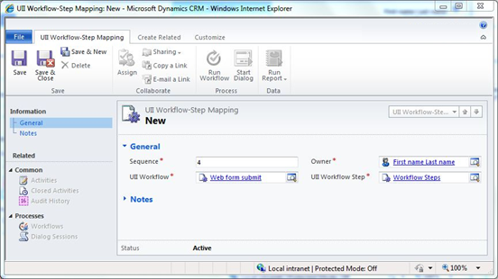

A UII administrator can use the UII Workflow management features to map a workflow to workflow steps.
 Note: Note: |
|---|
| To map a workflow step to a workflow, the workflow must be already created. To create a workflow, see Creating a Workflow. |
A step can exist independently from a workflow, or it can be related to more than one workflow.
|
Note: |
|---|
| Note: If a workflow has a step that has been deleted, an exception occurs when the workflow tries to execute the step. |
To map a workflow to its workflow steps
- Create the number of workflow steps required for a workflow. For more information about creating a workflow step, see Creating a New Workflow Step.
- In the left navigation pane, click Settings > UII Settings > UII Workflow.
- The UII Workflow list page appears. Double-click the workflow to which you want to map workflow steps.
- The Workflow Information page appears, as shown in the following illustration. In the left navigation pane, click UII Workflows Steps.
- The UII Workflow-Step Mappings page appears, as shown in the following illustration. On the action pane, click Add New UII Workflow-Step Mapping.
- The mapping information page appears, as shown in the following illustration. Type a sequence number in the Sequence box. This identifies the sequence of the step as it will be shown in the Integrated Agent Desktop. In the UII Workflow Step box, click the Search icon. Select the workflow step from the Look Up Records dialog, and then click OK.

- Click Save or Saveand Close.